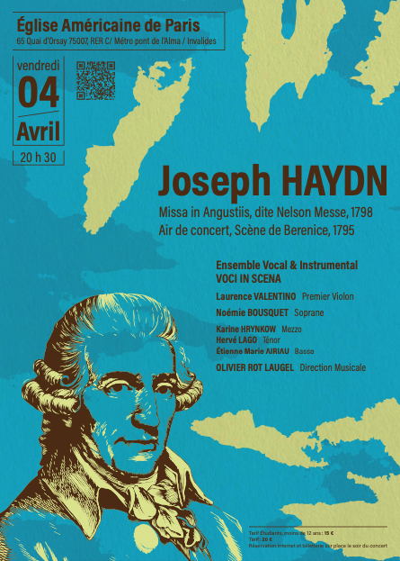

Répertoire
Joseph Haydn
Missa in Augustiis

Cliquez pour voir la description complète
Claudio Monteverdi
« De Guerre & d’Amour »

Cliquez pour voir la description complète
Claudio Monteverdi – « De Guerre & d’Amour »
Madrigali Guerrieri e Amorosi (livres 7 & 8, extraits)
Lamento della ninfa, Dolcissimo uscignolo, Vago augeletto, Hor che’l ciel e la terre, O come sei gentile, Non vedrò mai le stelle, Con che soavità labbra, Altri canti d’amor
Scherzi musicali
Si dolce e’l tormento
L’ensemble Vocal et Instrumental VOCI IN SCENA vous invite à un voyage sensible et émotionnel à travers les grands madrigaux des livres 7 & 8 « Guerrieri e Amorosi ».
Au sortir de la période faste et créatrice de la Renaissance, et sur le chemin du Baroque, Claudio Monteverdi, que l’on peut considérer comme le père de l’opéra, déploie dans ces grandes pièces la transition de l’écriture polyphonique vers le style opératique.
« Si dolce è ’l tormento che in seno mi sta ! » — si doux est le tourment que je sens dans mon cœur !
Cette nouvelle forme créatrice nous immerge dans l’émotion pure du chant lyrique — celle qui, plus tard, nous conduira à Haendel et Mozart, jusqu’aux grands compositeurs d’opéra du XIXe siècle romantique : Verdi, Puccini, Bizet...
Dans ce programme, l’amour et la guerre (symboliques ou non) sont des thèmes récurrents, parfaitement illustrés par le choix de ces « Madrigaux Guerriers et Amoureux ».
Georg Friedrich Haendel
Les années de jeunesse

Cliquez pour voir la description complète
Georg Friedrich Haendel
Les années de jeunesse
DIXIT DOMINUS
LAUDATE PUERI
NISI DOMINUS
Johannes Brahms
Die Sehnsucht ou l'âme du romantisme allemand

Cliquez pour voir la description complète
Johannes Brahms
Die Sehnsucht ou l'âme du romantisme allemand
LIEBESLIEDER
NEUE LIEBESLIEDER
Sehnsucht
Warum
Abendlied
O schöne Nacht
Spätherbst
Geistliches Lied